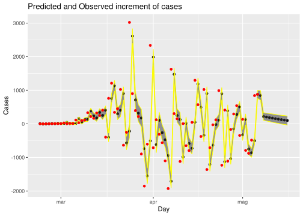
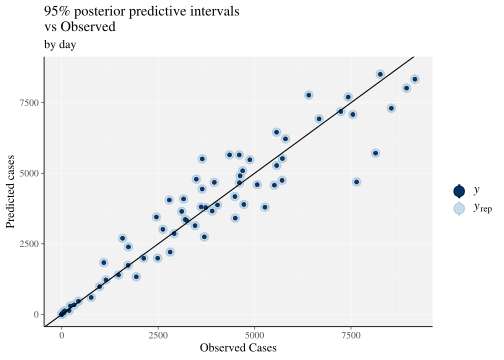
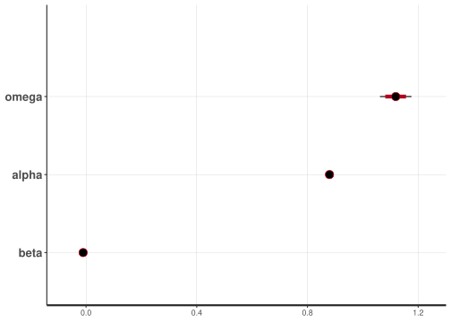

El virus de la Corona
2020-05-14 13:41:26
1 Prediction of * confirmed* cases for next days
Conditionally to:
- the observed data up to 2020-05-06 (only the official confirmed cases)
- assuming that these data reflect covid-19 epidemic evolution;
- the model detailed below;
Then below is the prediction of confirmed cases for last and next days updated at the time of this report (see above).
It also estimate the probability of observing the peak (defined as less increment in cases than the previous day). Prediction limits are at 95% of probability.
| Day | Inf. | Expected | Sup. | Prob of Peak | Obs. | |
|---|---|---|---|---|---|---|
| 72 | 2020-05-03 | 2592 | 2696 | 2800 | 0 | 1577 |
| 73 | 2020-05-04 | 1747 | 1833 | 1920 | 0 | 1091 |
| 74 | 2020-05-05 | 1260 | 1332 | 1405 | 0 | 1933 |
| 75 | 2020-05-06 | 2114 | 2208 | 2303 | 100 | 2810 |
| 76 | 2020-05-07 | 2944 | 3052 | 3163 | 100 | NA |
| 77 | 2020-05-08 | 3118 | 3271 | 3425 | 100 | NA |
| 78 | 2020-05-09 | 3287 | 3473 | 3659 | 100 | NA |
| 79 | 2020-05-10 | 3452 | 3660 | 3873 | 100 | NA |
| 80 | 2020-05-11 | 3603 | 3830 | 4061 | 100 | NA |
| 81 | 2020-05-12 | 3740 | 3983 | 4230 | 99 | NA |
| 82 | 2020-05-13 | 3864 | 4122 | 4385 | 98 | NA |
| 83 | 2020-05-14 | 3978 | 4247 | 4522 | 97 | NA |
| 84 | 2020-05-15 | 4081 | 4358 | 4639 | 95 | NA |
| 85 | 2020-05-16 | 4172 | 4458 | 4746 | 93 | NA |
1.1 Evolution of increments
increment=NULL
for(i in 2:ncol(preds)) increment=cbind(increment,preds[,i]-preds[,i-1])
obsinc=cvirus$casos[-1]-cvirus$casos[-nrow(cvirus)]
dbinc=data.frame(day=dd[-1],yinf=apply(increment,2,quantile,p=0.025),
ymean=apply(increment,2,mean),ysup=apply(increment,2,quantile,p=0.975),
obs=c(obsinc,rep(NA,np)))
p=ggplot(dbinc, aes(x=day, y=ymean,ymin=yinf,ymax=ysup)) +
geom_point()+
geom_ribbon(alpha = 0.5, colour = "yellow")+ geom_point(data=dbinc,aes(x=day,y=obs),color="red")+
xlab("Day")+ylab("Cases")+
ggtitle("Predicted and Observed increment of cases")
print(p)
1.2 Data
Here is the DataBase from ISCII (https://covid19.isciii.es/) of only confirmed cases at the end of the Day.
These data can be smileading and the rest of analysis is subject to assuming that confirmed cases reflect evolution of covid-19 spread.
rm(list=ls())
url <- "https://code.montera34.com:4443/numeroteca/covid19/-/raw/master/data/output/covid19-cases-uci-deaths-by-ccaa-spain-by-day-accumulated.csv"
cvirus <- read.table(url, sep = ",", header = T)
xxc=aggregate(cvirus$cases_registered,list(fecha=cvirus$date),sum,na.rm=TRUE)
xxc[,2]=c(0,xxc[-1,2]-xxc[-nrow(xxc),2])
cvirus=data.frame(fecha=as.Date(xxc[-1,1]),casos=xxc[-1,2])
cvirus=cvirus[order(cvirus$fecha),]
cvirus=na.omit(cvirus)
fecha=cvirus$fecha
n=nrow(cvirus)1.3 Model for marginal counts cases
Let \(Y_t \in \mathcal{N}_0\) represents the number of cases at time (days) \(t\) where \(t=1\) is 2020-02-22.
The fitted model is an ARMA(1,1) on the Poisson mean:
\[ \begin{aligned} Y_t | \lambda_t & \sim Poisson(\lambda_t), \mbox{ for } t>0\\ \log(\lambda_t) & = \omega+\alpha\log(1+y_{t-1})+\beta\log(\lambda_{t-1}), \mbox{ for } t>1\\ \alpha,\beta,\omega & \sim N(0,10) (i.i.d.)\\ log(\lambda_1) & \sim N(-99,0.001) \end{aligned} \]
Interpetation of parameters:
- \(\omega\) is the mean number (in log scale) of infected (actually the certified infected);
- \(\alpha\) is the short term component (i.e. the proportion of new infected with respect to the day before);
- \(\beta\) is the long term component that represents the evolution with respect to the mean (this is analogue to posing a GARCH on Poisson counts);
The non Bayesian and slighlty less complicated version of this model can be found here:
https://papers.ssrn.com/sol3/papers.cfm?abstract_id=3551626
rstan_options(auto_write = FALSE)
Sys.setenv(LOCAL_CPPFLAGS = '-march=native -mtune=native -axCORE-AVX2')
options(mc.cores = parallel::detectCores())
mod.cov ="
data {
int<lower=2> n;// number of observations
int<lower=2> np;// number of predicted days
int<lower=0> y[n]; // Cases
}
parameters {
real alpha;
real beta;
real omega;
}
transformed parameters {
vector[n] llambda;
llambda[1]=-99;
for(t in 2:n) llambda[t]=omega+alpha*log(1+y[t-1])+beta*llambda[t-1];
}
model {
// Priors
alpha ~ normal(0,10);
beta ~ normal(0,10);
omega ~ normal(0,10);
// Likelihood
y ~ poisson_log(llambda);
}
generated quantities {
int<lower=0> yp[n];
int<lower=0> ypf[np];
real llambdaf[np];
yp[1]=0;
for(t in 2:n) yp[t] = poisson_rng(exp(llambda[t])); //y values predicted by the model
llambdaf[1]=omega+alpha*log(1+y[n])+beta*llambda[n];
ypf[1]=poisson_rng(exp(llambdaf[1]));
for(t in 2:np){
llambdaf[t]=omega+alpha*log(1+ypf[t-1])+beta*llambdaf[t-1];
ypf[t]=poisson_rng(exp(llambdaf[t]));
}
}
"
ii=list(omega=1.12,alpha=0.88,beta=0)
init_f <- function () list(ii,ii,ii,ii)
m1 <- stan_model(model_code = mod.cov)Hamiltonian MC is used for obtaining the posterior:
1.4 Goodness of Fit
The model is reliable if is able to predict what observed, when taking into account prediction uncertainty. Here is the predicted mean and 95% posterior credible interval (i.e. small with respect to the mean).
load(file="stanmod.RData")
library(bayesplot)
preds=extract(fit,pars="yp")$yp
ppc_intervals(
y = apply(preds,2,mean),
yrep = preds,
x = cvirus$casos,
prob = 0.95
)+labs(
x = "Observed Cases",
y = "Predicted cases",
title = "95% posterior predictive intervals \nvs Observed",
subtitle = "by day"
) +
panel_bg(fill = "gray95", color = NA) +
grid_lines(color = "white")+geom_abline(intercept = 0,slope=1)
1.5 Posterior Parameters
Posterior distributions of model paramters: mean and 95% credible intervals.

## Inference for Stan model: 4f41132ade8735d34bcdceb797f2be59.
## 4 chains, each with iter=10000; warmup=5000; thin=1;
## post-warmup draws per chain=5000, total post-warmup draws=20000.
##
## mean se_mean sd 2.5% 25% 50% 75% 97.5% n_eff Rhat
## omega 1.12 0 0.03 1.06 1.10 1.12 1.14 1.18 6084 1
## alpha 0.88 0 0.00 0.87 0.88 0.88 0.88 0.89 5351 1
## beta -0.01 0 0.00 -0.02 -0.01 -0.01 -0.01 0.00 6267 1
##
## Samples were drawn using NUTS(diag_e) at Thu May 14 12:41:12 2020.
## For each parameter, n_eff is a crude measure of effective sample size,
## and Rhat is the potential scale reduction factor on split chains (at
## convergence, Rhat=1).